helen's takes on continual learning.
1. How much inspiration should we take from biology? (i think not a lot.)
i appreciate how far we've gotten with neural networks. but now, with more infra and system questions, i think we don't need to that closely mirror human capabilities. like, for a model to continually learn, do we really need to have the model “sleep and dream” i.e. experience replay, in order to learn? this was a big deal in 2025. Is there a way to perfectly parallelize training and rollout collection as in async RL? I think humans aren’t the most smart so maybe we can think of superhuman ideas.
2. The big bottleneck in serving
if there are a thousand customers, each with a model that drifts a little every day, someone has to batch those adapters efficiently on shared hardware, swap them without a cold start, roll them back if needed, keep a versioned history so you can audit what the model knew on a given date, and switch between models in the middle of a session without repaying the prefill cost. These are all big problems! vLLM has supported batching many adapters over one base model for a while but I wonder how it’d look for serving adapters that never stop changing, with recoverability and versioning. Nvidia researchers also just published a paper in August (arXiv 2608.03893) showing that within a model family, you can map the KV cache from one model into another with a closed-form linear fit, per attention head, from a small calibration set. so model switching would be cheap.
3. Long context models (TTT) vs. continual LoRA
I am curious whether long context models (TTT) win or continual LoRA approaches win — they look a little similar at first glance because they both update a small chunk of the model but I think they are different in subtle ways, like the way context is treated and which layer the updated weights live in, as well as constraints on the drift.
Retrieval, long context windows, and context engineering all do the same thing: they put learned information somewhere the model reads at inference time instead of somewhere it already knows. But that costs latency, it costs tokens, and a model reading a fact is not the same as a model that has internalized it.
This is not an argument that context memory is useless, but if "memory" means a bigger context window or a better vector store, it treats a temporary constraint as a permanent architecture.
4. Continual learning has to be designed hardware-first.
i realized very quickly that you cannot naively say "I will stream data into the weights and post-train continuously" — the batching shape, the adapter layout in memory, the cost of a weight transfer, and the serving latency budget all dictate what kind of learning is even possible. If you want a model that learns from you continuously and runs close to you, the current stack does not give you enough control over the primitives, so you must have the bandwidth constraints in mind.
5. Consumer AI vs B2B
I used to say B2B was the easier route and consumer was not ready for cutting edge research — some people are AI-native because of their work, and selling to them is easier. But the largest recent bets in the space are on personal AI, and the people making those bets have usage data I do not.
6. The timing for a continual-learning company is early for me
I think the company I want to build is early, because the serving stacks do not yet expose adapter-level and cache-level control as ordinary primitives; you cannot, from most APIs, change batching behavior or sequence limits or swap adapters mid-flight without doing something the provider did not intend. Until that flexibility exists, a continual-learning serving layer is fighting the infrastructure beneath it.
I am watching for when inference engines and hardware vendors start shipping those controls as documented features (I think inferact was hinting on this on x?)!
my ideal stack overview:

hard problems hey!